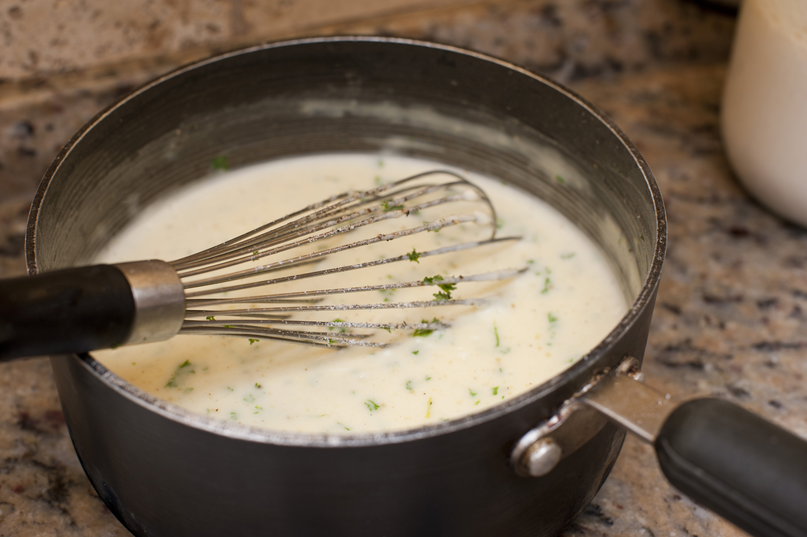

One of the key mother sauces of French cuisine. The béchamel is a hearty and versatile sauce that can be used with a myriad of recipes.
Built using the very simple ingredients of milk, flour and butter, and flavoured with just a touch of nutmeg, this is a must have staple in your cooking repertoire.
Although in essence this is a very simple recipe, the exactness of your measurements can have a lot of impact on the consistency and flavour of the end product, so the measurements for this recipe come from this BBC Good Food recipe, which aims to produce about 500ml of sauce.